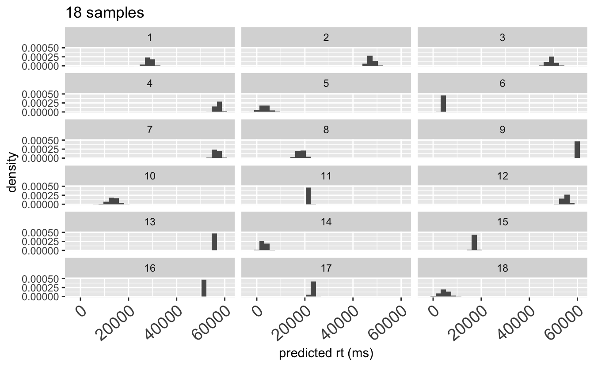
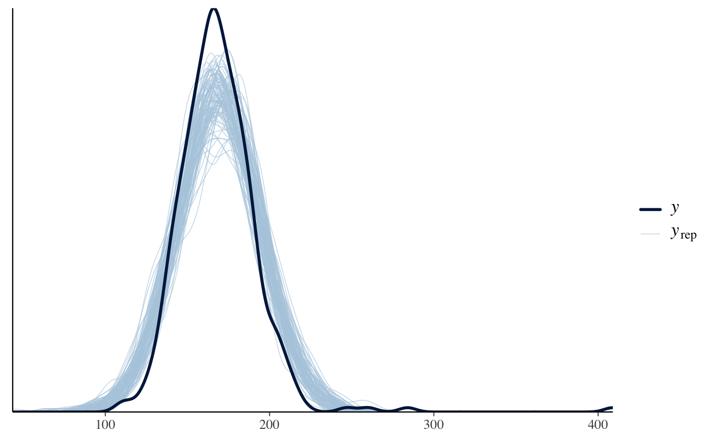
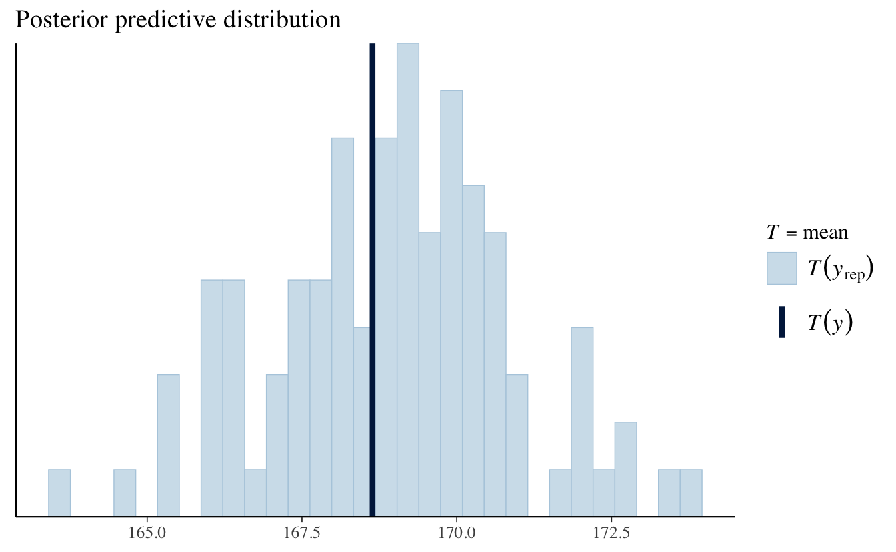

# set global knit options
knitr::opts_chunk$set(echo = T, # print chunks?
eval = T, # run chunks?
error = F, # print errors?
warning = F, # print warnings?
message = F, # print messages?
cache = F # cache?; be careful with this!
)
# suppress scientific notation
options(scipen=999)
# play a sound if error encountered
options(error = function() {beepr::beep(9)})
# load packages
## create list of package names
packages <- c( #"SIN", # this package was removed from the CRAN repository
"MASS", "dplyr", "tidyr", "purrr", "extraDistr", "ggplot2", "loo", "bridgesampling", "brms", "bayesplot", "tictoc", "hypr", "bcogsci", "papaja", "grid", "kableExtra", "gridExtra", "lme4", "cowplot", "pdftools", "cmdstanr", "rootSolve", "rstan"
)
# NB: if you haven't already installed bcogsci through devtools, it won't be loaded
## Now load or install & load all
package.check <- lapply(
packages,
FUN = function(x) {
if (!require(x, character.only = TRUE)) {
install.packages(x, dependencies = TRUE)
library(x, character.only = TRUE)
}
}
)
# this is also required, taken from the textbook
## Save compiled models:
rstan_options(auto_write = FALSE)
## Parallelize the chains using all the cores:
options(mc.cores = parallel::detectCores())
# To solve some conflicts between packages
select <- dplyr::select
extract <- rstan::extract3 Ch. 3
Set up
4 Ch. 3 - Computational Bayesian data analysis
- for real datasets, it was too cumbersome to do all the math to dertermine posterior distributions
- thanks to probabilistic programming languages, we can define our models without have to do all the math
4.1 Deriving the posterior through sampling
- recall the example cloze task for It’s raining, I’m going to take the…, with the ‘correct’ answer bus (‘umbrella’ in the book but to me ‘bus’ is the most natural completion)
- imagine 80 ‘successes’ and 20 ‘failures’
- assuming a binomial distribution as the likelihood function, and \(Beta(a = 4, b = 4)\) as a prior distribution for the cloze probability
- if we can obtain samples from the posterior distribution or \(\theta\), instead of an analystically derived posterior distribution, given enough samples we will have a good approximation of the posterior distribution
- ‘obtain samples’ here means a situation similar to when we use
rbinomorrnormto obtain samples from a particular distribution - assume we used some probabilistic prgramming langauge to obtain 20,000 samples from the posterior distribution of the cloze probability \(\theta\)
4.2 Bayesian regression models using Stan: brms
- because of increased computing power and probabilistic programming languages (e.g., WinBUGS, JAGS, R-INLA, pymc3, Turing, Stan), Bayesian statistics is now more popular
- these languages allow th euser to define models without the complexities of the sampling process
- however, they require learning a new language as te statistical model must be specified using a specific syntax
- additionally, some knowledge of the sampling process is needed to correctly parametrize the models and avoid convergence issues
- Bayesian inference in
Ris possible without having the fully specify the model thanks tostanarmandbrmspackages- both packages provide Bayesian equivalents of R model-fitting functions like
(g)lmer - both use Stan as the back-end for estimation and sampling
- both packages provide Bayesian equivalents of R model-fitting functions like
- for this part of the book we will focus on
brms- it can be useful for a smooth transition from frequentist models to their Bayesian equivalents
- it has the added benefit that the Stan code can be inspected via
brms::make_stancode()andbrms::make_standata() - users can then customatize their models or learn from the code produced internally by
brms
4.3 Prior predictive distribution
- we had the following priors in our linear model:
\[ \begin{aligned} \mu &\sim \mathit{Uniform}(0, 60000) \\ \sigma &\sim \mathit{Uniform}(0, 2000) \end{aligned} \tag{3.5} \]
- these priors encode assumptions about our data
- to understand these assumptions, we are going to generate data from the model
- such data, which is generated entirely by the prior distributions, is called the prior predictive distribution
- generating prior predictive distributions repeatedly helps us to check whether the priors make sense; we want to know whether the priors generate realistic-looking data
- to do this, repeat the following many times:
- Tae one sample from each of the priors
- Plug those samples into the porbability density/mass function used as the likelihood int he model to generate a dataset \(y_{pred_1}, ..., y_{pred_n}\)
- each sample is an imaginary or potential data set
- create a function that does this:
normal_predictive_distribution <-
function(mu_samples, sigma_samples, N_obs) {
# empty data frame with headers:
df_pred <- tibble(
trialn = numeric(0),
rt_pred = numeric(0),
iter = numeric(0)
)
# i iterates from 1 to the length of mu_samples,
# which we assume is identical to
# the length of the sigma_samples:
for (i in seq_along(mu_samples)) {
mu <- mu_samples[i]
sigma <- sigma_samples[i]
df_pred <- bind_rows(
df_pred,
tibble(
trialn = seq_len(N_obs), # 1, 2,... N_obs
rt_pred = rnorm(N_obs, mu, sigma),
iter = i
)
)
}
df_pred
}- the code below produces 1000 samples of the prior predictive distribution of the model we defined for
fit_pressfrom thedf_spacebardata, that had 361 trials- this code will produce 361,000 predicted values (361 observations x 1000 simulations)
- we could also use the option
sample_prior = "only"in ourbrmsmodel, but it still depends on Stam’s sampler which uses Hamiltonian Monte Carlo, and can fail to converge especially with uninformative priors
N_samples <- 1000
N_obs <- nrow(df_spacebar)
mu_samples <- runif(N_samples, 0, 60000)
sigma_samples <- runif(N_samples, 0, 2000)
tic()
prior_pred <- normal_predictive_distribution(
mu_samples = mu_samples,
sigma_samples = sigma_samples,
N_obs = N_obs
)
toc()2.118 sec elapsedprior_pred# A tibble: 361,000 × 3
trialn rt_pred iter
<dbl> <dbl> <dbl>
1 1 26813. 1
2 2 27298. 1
3 3 28224. 1
4 4 28051. 1
5 5 28176. 1
6 6 27918. 1
7 7 28332. 1
8 8 28241. 1
9 9 27841. 1
10 10 27232. 1
# ℹ 360,990 more rows
Box 3.1: A more efficint prior predictive distribution function
- alternatively, we could use the
purr::map2_dfr()functions as below, which would run a bit faster:
library(purrr)
# Define the function:
normal_predictive_distribution <- function(mu_samples,
sigma_samples,
N_obs) {
map2_dfr(mu_samples, sigma_samples, function(mu, sigma) {
tibble(
trialn = seq_len(N_obs),
rt_pred = rnorm(N_obs, mu, sigma)
)
}, .id = "iter") %>%
# .id is always a string and
# needs to be converted to a number
mutate(iter = as.numeric(iter))
}
# Test the timing:
tic()
prior_pred <- normal_predictive_distribution(
mu_samples = mu_samples,
sigma_samples = sigma_samples,
N_obs = N_obs
)
toc()- let’s look at the first 18 samples of the prior predictive distribution
prior_pred %>%
filter(iter <= 18) %>%
ggplot(aes(rt_pred)) +
labs(title = "18 samples",
x="predicted rt (ms)") +
geom_histogram(aes(y = ..density..)) +
theme(
axis.text.x =
element_text(angle = 40, vjust = 1, hjust = 1, size = 14)
) +
scale_y_continuous(
limits = c(0, 0.0005),
breaks = c(0, 0.00025, 0.0005), name = "density"
) +
facet_wrap(~iter, ncol = 3)

- Figure @fig-samples18 shows prior data sets that are not realistic: the data shows RT distributions are symmetrical (and we know they are generally right-skewed)
- worse, a few have negative RT values
- so, our priors led to unrealistic values in our prior predictive distribution
- so our priors weren’t very useful
- so, what priors should we have used?
4.4 The influence of priors: sensitivity analysis
- there are 4 main classes of priors in this book
- but there is no fixed nomenclature for these kind of priors, there’s no current naming convention in the field
4.4.1 Flat, uninformative priors
- the idea behind uninformative priors is to let the data ‘speak fo ritself’ and to not bias the statistical inference iwth ’subjective priors
- issues with this approach:
- the prior is as subjective as the likelihood, and different choices of likelihood might have a stronger mpace on the posterior than choice of priors
- uninformative priors are in general unrealistic and give equal weight to all values within the support of the prior distribution
- unifnromative priors m ake the sampling slower and might lead to convergence problems
- it is not always clear which parametrization of a given distribution the flat priors should be assigned to
- in our space bar button press example, and uniformative prior would be:
\[ \mu \sim Uniform(-10^{20}, 10^{20}) \] - this is a strange prior because it’s on them millisecond scale, and allows for impossibly large positive values, as well as negative values which are not possible at all
4.4.2 Regularising priors
used when we don’t have much prior information or knowledge
- sometimes called weakly informative or mildly informative
these are priors that down-weight extreme values (they provide regularization)
- usually not very informative, and mostly let the likelihood dominate in determining the posteriors
these are theory-neutral priors; they do not bias the parameters to values spported by any prior belief or theory
these priors help stabilize computation
in our button press example, a regularizing prior owuld be
\[ \mu \sim Normal_+(0,1000) \] - where \(Normal_+\) indicates that the normal distribution is truncated at 0ms (i.e., is cut off at 0, so no negative values are possible) - this is regularizing because it rules out negative button-pressing times and down-weights extreme values over 2000ms
4.4.3 Principled priors
- these priors encode all (or most of) the theory-neutral information
- one generally knows what one’s data do and do not look like, it is possible to build priors that truly reflect the properties of potential data sets
- in our button press example, a principled prior could be
\[ \mu \sim Normal_+(250,100) \] - it is not overly restrictive, but represents a guess about plausible button-pressing tiems - prior predictive checks using principled priors should produce realisitic distributions of the dependent variable
4.4.4 Informative priors
- for cases wehre a lot of prior knowledge exists, and not much data
- unless there is a very good reason to use informative priors, it is not a good idea to let the priors have too much influence on the posterior
- e.g., investigating a language-imparied population from which we can’t get many subjects, but a lot of previous published work exists on the topic
- in our button press data, an informative prior could be based on the meta-analysis of previously published or existing data, or the result of prior elicitation from an expert on the topic under investigation
- e.g., the following prior:
\[ \mu \sim Normal_+(200,20) \]
- this will have some influence ont he posterior for \(\mu\), especially when one has relatively sparse data
4.6 Posterior predictive distribution
- the posterior predictive distribution is a collection of data sets generated from the model (the likelihood and the priors)
- having obtained the posterior distributions of the parameters after taking into account the data, the posterior distributions can be used to generate future data from the model
i.e., given the posterior distribution of the parameters of the model, the posterior predictive distribution gives us some indication of what future data might look like
once the posterior distributions \(p(\theta|y)\) are available, the predictions based on these distributions, by integrating out the parameters
\[ p(\boldsymbol{y_{pred}}\mid \boldsymbol{y} ) = \int_{\boldsymbol{\Theta}} p(\boldsymbol{y_{pred}}, \boldsymbol{\Theta}\mid \boldsymbol{y})\, d\boldsymbol{\Theta}= \int_{\boldsymbol{\Theta}} p(\boldsymbol{y_{pred}}\mid \boldsymbol{\Theta},\boldsymbol{y})p(\boldsymbol{\Theta}\mid \boldsymbol{y})\, d\boldsymbol{\Theta} \] - assuming the past and future observations are conditionally independent given \(\theta\), the above equation can be written as:
\[ p(\boldsymbol{y_{pred}}\mid \boldsymbol{y} )=\int_{\boldsymbol{\Theta}} p(\boldsymbol{y_{pred}}\mid \boldsymbol{\Theta}) p(\boldsymbol{\Theta}\mid \boldsymbol{y})\, d\boldsymbol{\Theta} \tag{3.8} \]
- this posterior predictive distribution has important differences from predictions obtained with the frequentist approach
- frequentist: gives a point estimate of each predicted observation given the maximum likelihood estimate of \(\theta\) (a point value)
- Bayesian: gives a distribution of values for each predicated observation
- as with the prior predictive distribution, the integration can be carried out computationally by generating samples from the posterior predictive distribution
- we can use the same function
normal_predictive_distribution()as created above; the only difference is that the samples come from the posterior, not frommuandsigma
- we can use the same function
N_obs <- nrow(df_spacebar)
mu_samples <- as_draws_df(fit_press)$b_Intercept
sigma_samples <- as_draws_df(fit_press)$sigma
normal_predictive_distribution(
mu_samples = mu_samples,
sigma_samples = sigma_samples,
N_obs = N_obs
)# A tibble: 1,444,000 × 3
trialn rt_pred iter
<dbl> <dbl> <dbl>
1 1 170. 1
2 2 171. 1
3 3 165. 1
4 4 165. 1
5 5 214. 1
6 6 206. 1
7 7 165. 1
8 8 149. 1
9 9 122. 1
10 10 177. 1
# ℹ 1,443,990 more rows- the function
brms::posterior_predict()is convenient, as it delivers samples from the posterior predictive distribution- in a matrix, with the samples as rows and observations (data-points) as columns; so for
fit_pressthere’d be 361 columns - N.B., if the model is fit with
sample_prior = "only", the dependent variable is ignored andposterior_predictwill give samples from the prior predictive distribution
- in a matrix, with the samples as rows and observations (data-points) as columns; so for
- the posterior predictive distirubtion can be used to examine the ‘descriptive adequacy’ of the model under consideration
- this is called posterior predictive checks
- the goal is to establish that the posterior predictive data look more or less similar to the observed data
- achieveing ‘descriptive adequacy’ means the current data could have been generated by the model
- pass a test of descriptive adequacy is not strong evidence in favour of a model, but a major failure in descriptive adequacy can be interpreted as strong evidence against a model (i.e., passing the test is necessary but not sufficient evidence in favour of the model)
- in addition, one should check that the range of predictions that the model makes is reasonably constrained
- if a model can capture any possible outcome, then the model fit to a particular data set is not so informative
- thus, posterior predictive checking is important but only a sanity check to assess whether the model behaviour is reasonable
- we can usually just use the plot functions from
brms- e.g.,
ppcheck()takes as arguments the model, number of predicted data sets, and the type of visualisation- in these plots, the observed data are plotted as \(y\), and predicted data as \(y_{rep}\)
- e.g.,
# histograms
pp_check(fit_press, # model
ndraws = 11, # n of predicted data sets
type = "hist" # plot type
)# layered density plots
pp_check(fit_press, # model
ndraws = 100, # n of predicted data sets
type = "dens_overlay" # plot type
)- we see the data (\(y\)) is slightly skewed and has no values smaller than 100ms, but the predictive distributions are centered and symmetrical
- so the posterior predictive check shows a slight mismatch between the observed and predicted data
- Can we build a better model? Let’s see…
4.6.1 Comparing different likelihoods
- response times are not usually normally distributed
- log-normal distribution would be more realistic
4.6.2 The log-normal likelihood
- if \(y\) is log-normally distributed, that means that \(log(y)\) is normally distributed
- the log-normal distribution is also defined using the parameters location (\(\mu\)) and scale (\(\sigma\)), but these are on the log ms scale and correspond to the mean and standard deviation of the logarithm of the data \(y\), \(log(y)\), which will be normally distributed
- therefore, when we model some data \(y\) using the log-normal likelihood, the parameters \(\mu\) and \(\sigma\) are on a different scale than the data \(y\), which is represented here:
\[ \begin{aligned} \log(\boldsymbol{y}) &\sim \mathit{Normal}( \mu, \sigma)\\ \boldsymbol{y} &\sim \mathit{LogNormal}( \mu, \sigma) \end{aligned} \tag{3.9} \]
- we can obtain samples from the log-normal distribution, using the normal distribution by first setting an auxiliary variable, \(z\), so that \(z = log(y)\)
- so, \(z \sim Normal(\mu, \sigma)\)
- then we can use \(exp(z)\) as samples from the \(LogNormal(\mu,\sigma)\)
- since exp(\(z\)) = exp(log(\(y\))) = \(y\)
mu <- 6
sigma <- 0.5
N <- 500000
# Generate N random samples from a log-normal distribution
sl <- rlnorm(N, mu, sigma)
ggplot(tibble(samples = sl), aes(samples)) +
geom_histogram(aes(y = ..density..), binwidth = 50) +
ggtitle("Log-normal distribution\n") +
coord_cartesian(xlim = c(0, 2000))# Generate N random samples from a normal distribution,
# and then exponentiate them
sn <- exp(rnorm(N, mu, sigma))
ggplot(tibble(samples = sn), aes(samples)) +
geom_histogram(aes(y = ..density..), binwidth = 50) +
ggtitle("Exponentiated samples from\na normal distribution") +
coord_cartesian(xlim = c(0, 2000))4.7 List of most important commands
- core
brmsfunction for fitting models, for generating prior predictive and posterior predictive data
fit_press <- brm(rt ~ 1,
data = df_spacebar,
family = gaussian(),
prior = c(
prior(uniform(0, 60000), class = Intercept, lb = 0, ub = 60000),
prior(uniform(0, 2000), class = sigma, lb = 0, ub = 2000)
),
chains = 4,
iter = 2000,
warmup = 1000,
file = here::here("models", "notes", "ch3", "fit_press")
## uncomment for prior predictive:
## sample_prior = "only",
## uncomment when dealing with divergent transitions
## control = list(adapt_delta = .9)
)- extract samples from fitted model:
as_draws_df(fit_press)# A draws_df: 1000 iterations, 4 chains, and 5 variables
b_Intercept sigma Intercept lprior lp__
1 167 25 167 -19 -1683
2 171 26 171 -19 -1684
3 167 26 167 -19 -1684
4 168 26 168 -19 -1684
5 170 25 170 -19 -1684
6 169 25 169 -19 -1683
7 169 25 169 -19 -1683
8 168 25 168 -19 -1683
9 171 25 171 -19 -1684
10 167 24 167 -19 -1685
# ... with 3990 more draws
# ... hidden reserved variables {'.chain', '.iteration', '.draw'}- basic plot of posteriors
plot(fit_press)- plot prior predictive/posterior predictive data
## Posterior predictive check:
pp_check(fit_press, ndraws = 100, type = "dens_overlay")
## Plot posterior predictive distribution of statistical summaries:
pp_check(fit_press, ndraws = 100, type = "stat", stat = "mean") +
labs(title = "Posterior predictive distribution")
## Plot prior predictive distribution of statistical summaries:
pp_check(fit_press, ndraws = 100, type = "stat", stat = "mean",
prefix = "ppd") +
labs(title = "Prior predictive distribution")4.8 Summary
- in this chapter we:
- learned how to fit and interpret a Bayesian model with a normal likelihood
- looked at the effect of priors by means of prior predictive distributions and sensitivity analysis
- looked at the fit of the posterior by inspecting the posterior predictive distribution (which givees us some idea about the descriptive adequacy of the model)
- learned how to fit a Bayesian model with a log-normal likelihood, and how to compare the predictive accuracy of different models
5 Session Info
Compiled with R version 4.4.0 (2024-04-24) (Puppy Cup) in RStudio version 2023.12.1.402 (Ocean Storm).
sessionInfo()R version 4.4.0 (2024-04-24)
Platform: aarch64-apple-darwin20
Running under: macOS Ventura 13.2.1
Matrix products: default
BLAS: /Library/Frameworks/R.framework/Versions/4.4-arm64/Resources/lib/libRblas.0.dylib
LAPACK: /Library/Frameworks/R.framework/Versions/4.4-arm64/Resources/lib/libRlapack.dylib; LAPACK version 3.12.0
locale:
[1] en_US.UTF-8/en_US.UTF-8/en_US.UTF-8/C/en_US.UTF-8/en_US.UTF-8
time zone: Europe/Berlin
tzcode source: internal
attached base packages:
[1] grid stats graphics grDevices datasets utils methods
[8] base
other attached packages:
[1] rstan_2.32.6 StanHeaders_2.32.7 rootSolve_1.8.2.4
[4] cmdstanr_0.7.1 pdftools_3.4.0 cowplot_1.1.3
[7] lme4_1.1-35.3 Matrix_1.7-0 gridExtra_2.3
[10] kableExtra_1.4.0 papaja_0.1.2 tinylabels_0.2.4
[13] bcogsci_0.0.0.9000 hypr_0.2.8 tictoc_1.2.1
[16] bayesplot_1.11.1 brms_2.21.0 Rcpp_1.0.12
[19] bridgesampling_1.1-2 loo_2.7.0 ggplot2_3.5.1
[22] extraDistr_1.10.0 purrr_1.0.2 tidyr_1.3.1
[25] dplyr_1.1.4 MASS_7.3-60.2
loaded via a namespace (and not attached):
[1] Rdpack_2.6 inline_0.3.19 sandwich_3.1-0
[4] rlang_1.1.3 magrittr_2.0.3 multcomp_1.4-25
[7] matrixStats_1.3.0 compiler_4.4.0 reshape2_1.4.4
[10] systemfonts_1.0.6 vctrs_0.6.5 stringr_1.5.1
[13] pkgconfig_2.0.3 fastmap_1.1.1 backports_1.4.1
[16] labeling_0.4.3 effectsize_0.8.7 utf8_1.2.4
[19] rmarkdown_2.26 pracma_2.4.4 ps_1.7.6
[22] nloptr_2.0.3 xfun_0.43 jsonlite_1.8.8
[25] broom_1.0.5 parallel_4.4.0 R6_2.5.1
[28] stringi_1.8.4 car_3.1-2 boot_1.3-30
[31] estimability_1.5 knitr_1.46 zoo_1.8-12
[34] parameters_0.21.6 splines_4.4.0 tidyselect_1.2.1
[37] rstudioapi_0.16.0 abind_1.4-5 yaml_2.3.8
[40] codetools_0.2-20 processx_3.8.4 pkgbuild_1.4.4
[43] qpdf_1.3.3 plyr_1.8.9 lattice_0.22-6
[46] tibble_3.2.1 withr_3.0.0 bayestestR_0.13.2
[49] askpass_1.2.0 posterior_1.5.0 coda_0.19-4.1
[52] evaluate_0.23 survival_3.5-8 RcppParallel_5.1.7
[55] xml2_1.3.6 ggpubr_0.6.0 pillar_1.9.0
[58] carData_3.0-5 tensorA_0.36.2.1 checkmate_2.3.1
[61] renv_1.0.7 stats4_4.4.0 insight_0.19.10
[64] distributional_0.4.0 generics_0.1.3 rprojroot_2.0.4
[67] rstantools_2.4.0 munsell_0.5.1 scales_1.3.0
[70] minqa_1.2.6 xtable_1.8-4 glue_1.7.0
[73] emmeans_1.10.1 tools_4.4.0 ggsignif_0.6.4
[76] mvtnorm_1.2-4 rbibutils_2.2.16 QuickJSR_1.1.3
[79] datawizard_0.10.0 colorspace_2.1-0 nlme_3.1-164
[82] cli_3.6.2 fansi_1.0.6 viridisLite_0.4.2
[85] svglite_2.1.3 Brobdingnag_1.2-9 gtable_0.3.5
[88] rstatix_0.7.2 digest_0.6.35 TH.data_1.1-2
[91] htmlwidgets_1.6.4 farver_2.1.1 htmltools_0.5.8.1
[94] lifecycle_1.0.4 here_1.0.1